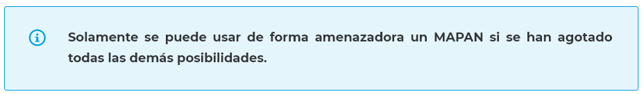

El objetivo de esta técnica es disponer de un soporte de alternativas en caso que el acuerdo no esté resultando como se esperaba. Es fundamental que la contraparte no interprete que el negociador está apurado (hay que manejar las emociones y ansiedad) o que no posee alternativas. La contraparte, en ese caso, podría contrarrestar cada una de las establecidas en la elaboración del MAPAN.
El valor de conocer la mejor alternativa a un acuerdo negociado es que:
- Proporciona una alternativa por si las negociaciones fracasan.
- Mejora el poder de negociación.
- Determina el peor precio que se está dispuesto a aceptar.

Cuanto mayor sea el MAPAN, más poder se tendrá en la negociación. Contrariamente, cuanto mayor sea el MAPAN del adversario, menos poder se tendrá.
Para conocer el proceso para encontrar la mejor alternativa a un acuerdo negociado, desarrollado por la Facultad de Derecho de Harvard, te invitamos a leer lo siguiente:
|
MAPAN: la negociación según Harvard La Facultad de Derecho de Harvard ha desarrollado un proceso para encontrar la mejor alternativa a un acuerdo negociado. Se resume en los siguientes pasos:
|